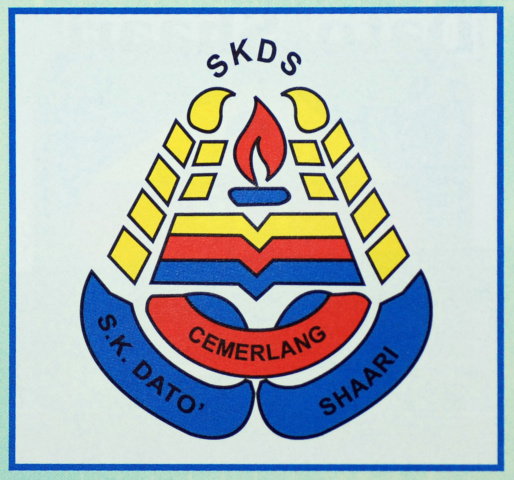
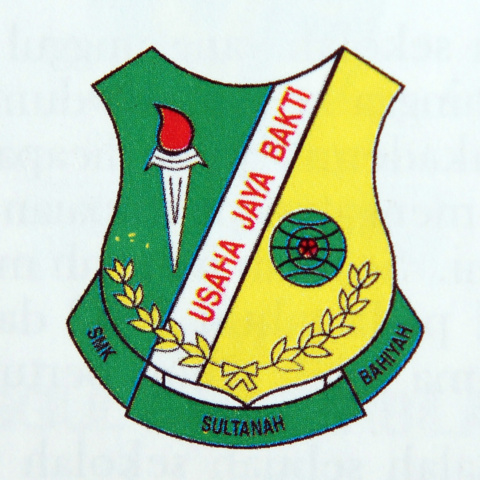

Tabika Kemas was the first education when I was 5 and 6 years old. It was located in Kampung Kubang Rotan which is about 500 meter from my house. During this 2 years, I joined many competition such as Malay rhythm dancing competition. In learning process, I got the best teacher ever name Teacher Hasanah. In this 2 years too, my teacher brought me and other stundents for the study tour at Muzeum Padi and Petrosains as well as Zoo Animals.

Sekolah Kebangsaan Dato' Shaari
After finish my 2 years education at Tabika Kemas, I continued at Sekolah Kebangsaan Dato' Shaari which is the only school in my village. I studies at this school for 6 years which is from Standard 1 until Standard 6. Throughout my studies in primary school, I was placed in Arif's class. Arif's class(A) was the 1st class followed by Bijak's Class(B) and Cerdas's Class(C). Starting from Standard 3 until Standard 6 , I was appointed to be a school prefect. Besides, during those 6 years, I won many awards, such as:
Athlete in runnning event | 2013
The Best leader in and won the 2nd place in marching| 2015
The best attandance in every month | 2015
Achievement in exams
- Ujian Penilaian Kelas Kafa (UPKK) | 2014 | 8A's with MUMTAZ level in j-QAF Programme
- Ujian Penilan Sekolah Rendah (UPSR) | 2015 | 4A IB
- 3rd place in 5 Arif's class with the exccelent subject: Mathematic and Science | 2014

SMK Sultanah Bahiyah
I finished my primary school and continued with secondary school about 5 years starting from Form 1 until Form 5. My school has 8 classes for each Form and I was in 1A1's class. Began from when I was Form 2 until Form 3, I have changed my class to 1A2's class. When I was Form 4 and Form 5, I was is class 4SS2 and 5SS2. SS2 stand for science social which is I studies a basic science with additional subject which are Economy and Seni Visual. Throughout this 5 years in the school, I have face many challanges and experience my things in my life that could be a memory. I was the president in Form 2 and Form 3. Being a president is quite difficult, thus I decided to resign in the next year. In my secondary school, I do not participate in many competitions because there are too much students who are better than me. Hence I am active in uniformed club which St. John Ambulans. I do join the marching, camp, first aid training and meetings. Here some achievement throughout in SMKSB:
NILAM Programme with 2 stars | 2020
Awarded as a Cadet Corporal in St. John Ambulance | 2018
Awarded as a Adult Corporal in St. John Ambulance | 2019
President Award | 2017 & 2018
Won the 1st place in marching | 2018
Won the 1st place in creating first aid video | 2020
This is my 4th educational in the age of 20 starting from when I was 18 years old. I studies in Information Management Faculty in Library Management course. This course was just about 2 years with 4 Semester and I am currently in the last semester. Throughout this 2 years, I have been experienced and challenged and it is quite fun as the university students.